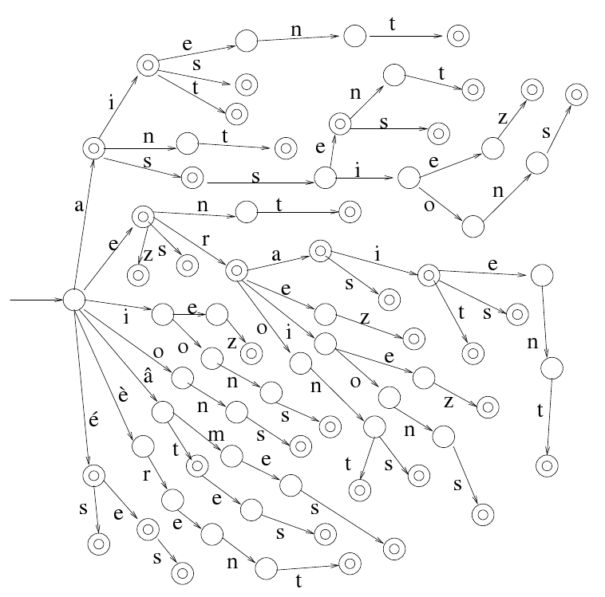
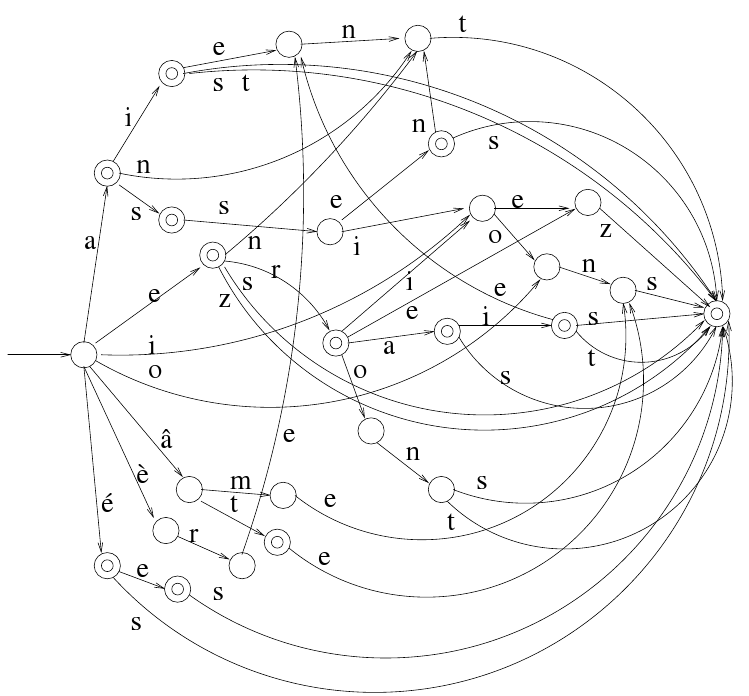
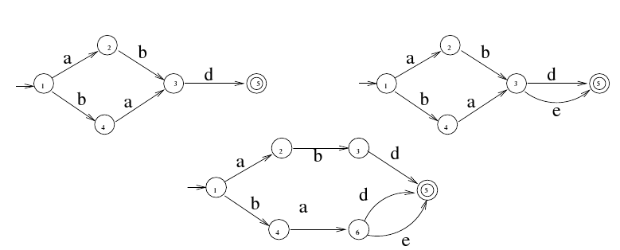
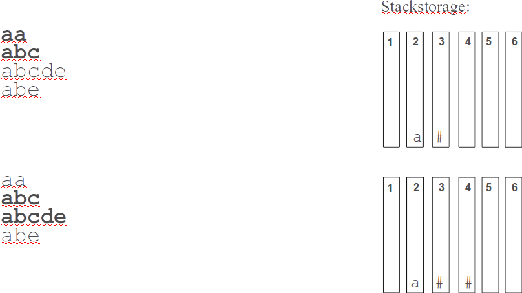
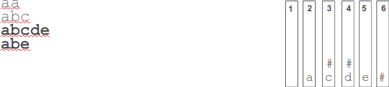
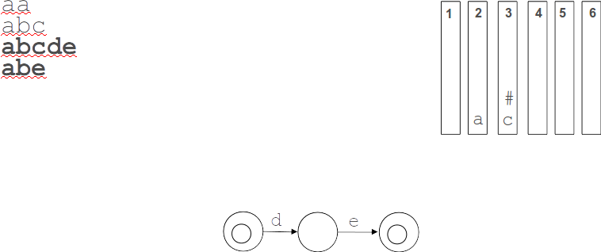
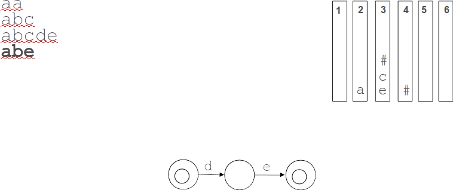
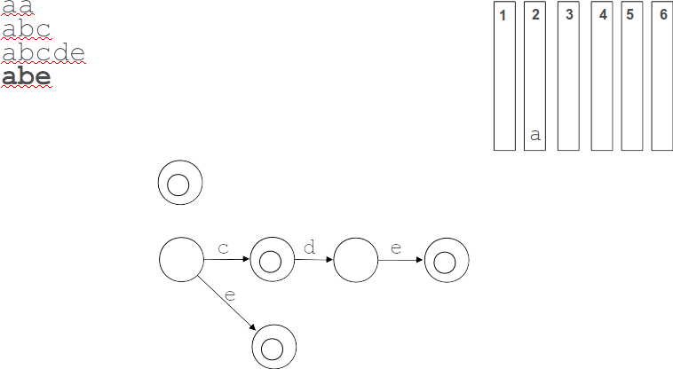
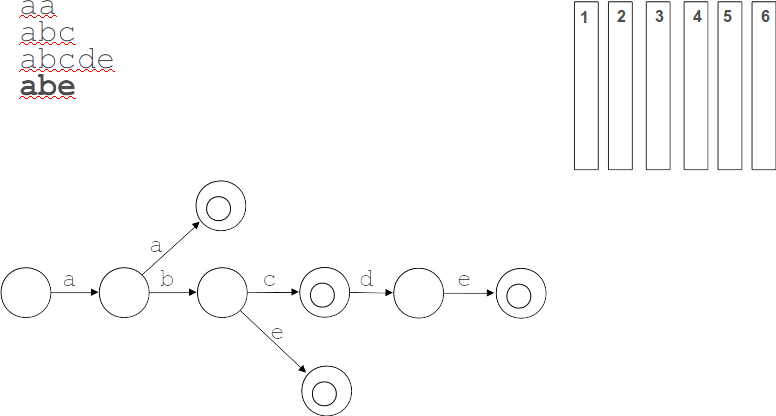

Construction basics¶
Introduction¶
“An automaton (plural: automata) is a self-operating machine. The word is sometimes used to describe a robot, more specifically an autonomous robot. Used colloquially, it refers to a mindless follower.” (Wikipedia)
Minimal Acyclic Finite State Automata¶
deterministic, acyclic, finite-state automata compact size, fast linear lookup

Minimizing yields the FSA:

Construction¶
keyvi is using so called “incremental construction”, the alternative are obviously non-incremental algorithms. If you are curious, there are some instruction classes available on youtube.
keyvi is only about text/string automata. There are other use cases for finite state techniques, e.g. modeling real control flows.
Incremental Construction by Watson/Daciuk¶
Register = Ø
while (another word):
Word = next word in lexicographic order
CommonPrefix = common_prefix(Word) #automata lookup
LastState = last_state (CommonPrefix)
CurrentSuffix = Word [length(CommonPrefix + 1):]
if LastState.has_Children():
replace_or_register(LastState)
add_suffix(LastState, CurrentSuffix)
replace_or_register(q0)
func replace_or_register(State):
Child = last_child(State)
if (has_children (Child):
replace_or_register(Child)
if Register.find(Child):
last_child = Register[Child]
else:
Register.add(Child)

Incremental Construction in Keyvi¶
Algorithm¶
Register = Ø
current_word = next word in lexicographic order
while (another word):
new_word = next word in lexicographic order
common_prefix = common_prefix(current_word, new_word)
feed_stack ( current_word , length( common_prefix), length ( current_word ) )
consume_stack ( length ( common_prefix ) )
current_word = new_word
feed_stack ( current_word, 0, length ( current_word ) )
consume_stack ( 0 )
func feed_stack( word, begin, end ):
for ( i = begin, i<end, ++i ):
unpacked_state_stack.insert(i, word[i])
unpacked_state_stack.insert(end, “final”)
func consume_stack(end):
while ( highest_stack > end ):
stack_entry = unpacked_state_stack.pop(highest_stack)
state = add_state (stack_entry)
--highest_stack
unpacked_state_stack.connect ( highest_stack, state )
Code:
General entry point: generator
Unpacked_State_Stack: unpacked_state_stack
Illustration¶
Building a tiny automata containing just 4 strings:
aa
abc
abcde
abe
Step 1¶

Step 2¶

Step 3¶

Step 4¶

Step 5¶

Step 6¶
Step 7¶

Summary¶
The FSA is built from “right to left”, the root state is written last.
Comparison: Daciuk/Watson vs. keyvi¶
use sorted data characteristic: compare only the last two words
no temporary state creation as with replace_or_register, which can be problematic depended on underlying data structure (e.g. Sparse Array)
no recursion (as in replace_or_register)